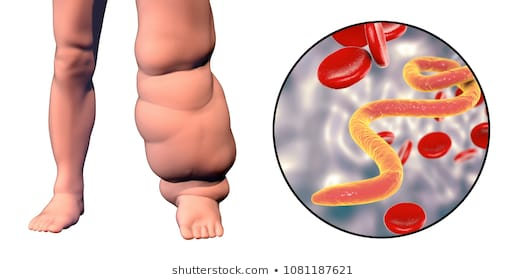

- Mutualismo
- Definición
- Relación intraespecífica en la que las especies implicadas tienen un beneficio mutuo en términos de:
- Crecimiento
- Supervivencia
- Reproducción
- En otras palabras: les va mejor estar juntas que separadas.
-
- No es que las especies muestren amistad o altruismo entre ellas. Éstos son valores exclusivamente humanos (y también de algunos otros vertebrados con cortex desarrollado)
- El hecho de que el mutualismo exista se debe a que ha sido favorecido por la selección natural.
- Tiene varios orígenes evolutivos. En todos los casos se requiere que haya un contacto cercano entre las especies implicadas.
- Parasitismo
- Parásitos y hospedadores conviven en una relación en la que el parásito gana y el hospedador pierde.
- Pero al parásito no le "interesa" matar al hospedador.
- Y el hospedador no consigue deshacerse del parásito (a escala evolutiva)
- La resultante de este proceso conduce al comensalismo primero (una relación en la que uno gana y el otro resulta indiferente) y al mutualismo después.
-
- Es quizás la bacteria más abundante de toda la biosfera.
- Es un endosimbionte (=vive obligadamente dentro de células eucariotas)
- Infecta a
- Artrópodos
- Se localiza en las gónadas.
- Parásito reproductivo.
- Feminización de las crías: crías que serían machos en condiciones normales, se desarrollan como hembras cuando tienen parásitos.
- Incompatibilidad citoplasmática: el esperma de los machos infectados provoca esterilidad en hembras no infectadas. Solo hay reproducción cuando la hembra también está infectada.
- Se ha comprobado que 66% de todos los artrópodos tienen este parásito...
- Filarias (un tipo de nemátodos)
- Las filarias son parásitos que afectan a humanos (sobre todo en lugares pobres)
- 
- Las filarias y la Wolbachia tienen una relación de mutualismo nutricional
- La bacteria provee vitaminas, nucleótidos y otras moléculas que la filaria no puede fabricar.
- La filaria provee un lugar a la bacteria para desarrollar su ciclo vital.
- Depredación "indigesta"
- Algunas simbiosis empiezan "evolutivamente" como una depredación que no se consuma.
- Una célula puede ingerir otra y que no se produza su digestión total. Los restos que queden pueden ser más útiles en funcionamiento que como alimento. Ej. Cloroplastos...
- Importancia
- Ha sido tradicionalmente minusvalorada por los ecólogos.
- No es tan evidente como la depredación o el parasitismo.
- El sesgo de la "lucha por la vida" de Darwin ha limitado la investigación del mutualismo.
- Se ha estudiado más desde el punto de vista de la fisiología.
- Se sabe poco sobre cómo el mutualismo afecta a la dinámica poblacional.
- Sin embargo, tiene una importancia capital en el funcionamiento de la biosfera
- Añade una componente de estabilidad a la dinámica poblacional.
- Aumenta la capacidad de las especies de ocupar nichos. Amplía el nicho ecológico.
- Incide en la identidad misma de las especies y de los ecosistemas. Es el paradigma de "soy porque somos"
- Tipos
- Simbióticos
- Características
- Los individuos coexisten físicamente.
- Su relación es forzosa. No pueden vivir sin esa relación.
- La interacción suele ocurrir en relación a la transferencia de nutrientes.
- Ejemplos
-
- Postula que los orgánulos celulares que tienen su propio ADN (mitocondrias y cloroplastos) surgieron como consecuencia de un proceso de simbiosis.
- Una protoeucariota ingirió a una protoprocariota y surgió una simbiosis que ha condicionado toda la evolución desde entonces. Esto ocurrió hace unos 2300 millones de años.
- TODAS LAS CÉLULAS DE TODOS LOS ANIMALES Y DE TODAS LAS PLANTAS QUE EXISTEN Y HAN EXISTIDO, PROCEDEN DE UN PROCESO SIMBIÓTICO.
- Traducción de ARN en proteínas
- Líquenes
- Características
- Simbiosis entre alga y hongo
- A veces es un hongo que "secuestra" a un alga.
- El hongo no puede vivir por sí mismo, pero el alga sí.
- El alga aporta fotosintatos.
- El hongo aporta humedad y nutrientes.
- Ecología
- Son colonizadores primarios (pioneros en la sucesión ecológica). Generan suelo sobre roca madre.
- Viven bien en ambientes con pocos nutrientes.
- Algunos líquenes desarrollan un comensalismo o mutualismo con árboles. Mutualismo secundario.
- Corales
- Características de la simbiosis
- Simbiosis entre pólipos (filum cnidarios. Medusas...) y algas dinoflageladas del grupo de las Zooxantelas
- El alga aporta
- Alimento en forma de fotosintatos. El 90% de lo que produce se transfiere al pólipo
- Carbonato para generar la estructura coralina.
- El cnidario aporta sustento y un medio estable para el alga.
- Esta relación hace que los corales se comporten como plantas
- requiren luz
- aguas limpias para que entre la luz
- nutrientes inorgánicos
- Otra simbiosis secundaria...
- Ecología
- Arrecifes de coral
-
- Son el mayor punto caliente de biodiversidad marina.
- Fuente de medicamentos potencialmente útiles para la Humanidad.
- "guarderías" de especies de peces con interés alimentario.
- Fijan carbono atmosférico y lo retiran de la atmósfera creando roca caliza.
- Blanqueamiento de coral (fallo en la simbiosis)
- Cuando las condiciones de temperatura, salinidad o nivel de contaminación no son las adecuadas, la zooxantela se "escapa" del pólipo.

-
- Micorrizas
- Características
- Simbiosis entre micelios fúngicos y raíces de plantas.
- La planta aporta fotosintatos (azúcares) al hongo.
- El hongo aporta
- Mejor capacidad de asimilar nutrientes (P y K fundamentalmente)
- Mayor crecimiento individual.
- Mayor longevidad de las raíces
- Menor susceptibilidad a invasión de hongos patógenos.
-
- También intercambian nutrientes inorgánicos
- Tipos
- Ectomicorrizas
- las hifas del hongo no penetran en las células vegetales
- Endomicorrizas
- Las hifas del hongo entran en las células vegetales.
- Son las más comunes.
- Son específicas. Es decir, una especie de hongo "infecta" a ciertas especies vegetales.
- Ecología
-
- Están presentes en todos los ecosistemas naturales estudiados.
-
- Mineralización y disolución de minerales: los hongos micorrícicos por sí mismos o asociados con bacterias son capaces de liberar nutrientes de la roca madre.
- Movilización de nutrientes a partir de sustancias orgánicas: Contribuyen a metabolizar moléculas grandes ricas en N y P, que así son fácilmente asimiladas por las plantas.
- Flujo de carbono: promueven la distribución del carbono fijado por la planta en los suelos, contribuyendo al metabolismo de los mismos.
- Bioremediación: Se está estudiando en qué medida las micorrizas pueden ayudar a metabolizar sustancias orgánicas tóxicas existentes en el suelo.
- Reducen el estrés de las plantas
- Efectos en las comunidades y en los ecosistemas: La diversidad y la productividad está relacionada con la existencia de una densa red de ensamblajes micorrícicos.
- En resumen: las micorrizas conectan a los productores primarios de los ecosistemas con los nutrientes (que se distribuyen de manera heterogénea en el suelo) y promueven la transferencia de productos ricos en carbono (y energía) al suelo.
-
- Plantas y bacterias fijadoras de nitrógeno
- Unas palabras sobre el nitrógeno
- Es pieza clave de la vida: forma parte de los aminoácidos que se ensamblan para formar proteínas.
- Es el principal componente de la atmósfera (79%)
- Sin embargo, muy pocos organismos pueden asimilarlo directamente de la atmósfera.
- Bacterias
- Arqueas
- Adelanto del ciclo del nitrógeno
-
- Simbiosis entre bacterias fijadoras de nitrógeno (Género Rhizobium) y plantas de la familia leguminosas.
- La planta aporta hidratos de carbono a la bacteria.
- La bacteria suministra nitrógeno a la planta.
- Mutualismos digestivos
- Herbívoros
- Los herbívoros cuentan con una abundante flora microbiana que fermenta el alimento y contribuye a digerir la celulosa y la lignina.
- Esta simbiosis evolucionó hace unos 50 millones de años, cuando aparecieron los ambientes de pastos en clima frío.
-
- Nuestra microbiota no solo contribuye a que extraigamos más nutrientes de los alimentos.
- También parece tener relación con cuestiones psicológicas y con desarrollo cognitivo.
- EStos microorganismos generan sustancias que llegan al cerebro y afectan a nuestro estado de ánimo.
- A la vez, nuestro cerebro actúa sobre las bacterias modulando su crecimiento y abundancias relativas.
-
- Asimbióticos
- Características
- Los individuos no coexisten físicamente.
- La relación no siempre es forzosa.
- Solo interdependen para alguna función específca
- Ejemplos
- Defensivos
- Pez payaso y anémonas
- Hormigas y pulgones
- Hormigas y acacias
- De limpieza
- Peces y peces
- Peces e hipopótamos
- Aves y cocodrilos
- De dispersión de semillas
- Animales que se alimentan de frutos, no de semillas.
- Cuando estos depredadores se comen el fruto, aumentan la probabilidad de germinación.
- "siembran" las semillas en sitios adecuados (ej. a la sombra de un árbol)
- Las plantas han evolucionado para "atraer" a los dispersantes.